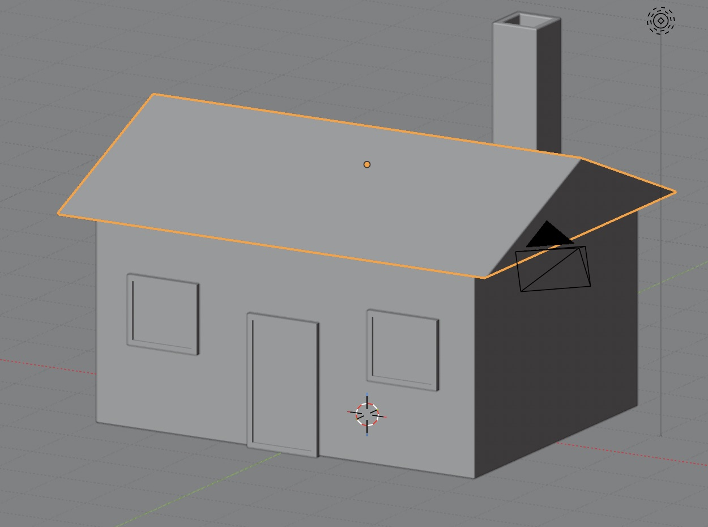

PART 1 OF 3 · C1 · 9 PAGES
Ground and walls
Begin with an empty scene. Learn the controls, create and name the ground and wall block, and save your own recoverable file.
Follow three connected construction guides. Make your own ground and walls, turn a roof box into a gable, then add the door, windows and chimney. Each part shows actual Blender actions and the visible result.
These three construction guides are a draft update. C4/C5 materials, settled snow, lighting and finished-render teaching are still under repair. A complete beginner cold run, school Windows trial and recorded audio/video demonstration have not been established.
The full 17-stage bootcamp remains available with its original later continuations. Their presence does not mean this repair has newly verified them. In the Communications 11 film-foundation use, this modelling remains formative / ALIGNMENT PENDING.
Begin with an empty scene. Learn the controls, create and name the ground and wall block, and save your own recoverable file.
Continue your own C1. Select the upper roof vertices, form and merge the ridge, then inspect its wall contact and overhang.
Continue your own C2. Build a framed door, one recessed window and its duplicate, then a chimney rim/recess and small bevels.

C1 → C2 → C3 uses your own saved work. A supplied finished model does not replace the construction. Save each version and reopen the exact file before continuing.
The guides retain their eight supports and local answer drafts. A local saved draft is not a teacher submission or confirmed Evidence.
C1: start and walls · C2: roof · C3: details
Existing materials continuation · earlier draft · Existing camera/render continuation · earlier draft · Return to all 17 bootcamp stages